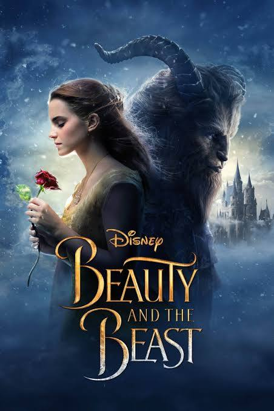
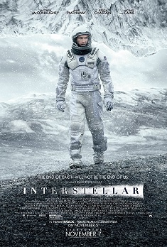

membuaat tabel dengan menyertakan gambar dan link video, pada tugas ini data dummy yang saya gunakan
yaitu rating film yang menyertakan poster dan trailer dari film terserbut
| Judul Film | Poster | Tahun Rilis | Rate | Sinopsis | Trailer Video |
|---|---|---|---|---|---|
| Beauty and The beast |

|
2017 | 7.1 / 10 | Belle embarks on a journey to save her father from a creature that has locked him in his dungeon. Eventually, she learns that the beast is an enchanted prince who has been cursed. |
|
| Interstellar |

|
2014 | 8.7 / 10 | Interstellar adalah film fiksi ilmiah epos tahun 2014 yang disutradarai oleh Christopher Nolan dan diproduseri oleh Emma Thomas, Christopher Nolan dan Lynda Obst. Naskah film ini ditulis oleh Jonathan Nolan dan Christopher Nolan. |
|
| Home Alone |

|
1990 | 7.7 / 10 | Eight-year-old Kevin is accidentally left behind when his family leaves for France. At first, he's happy to be in charge; but when thieves try to break into his home, he puts up a fight like no other. |
|